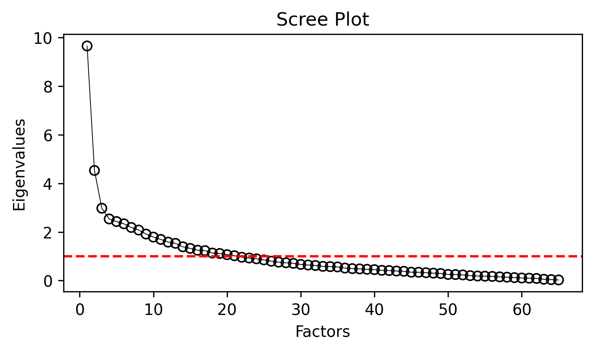
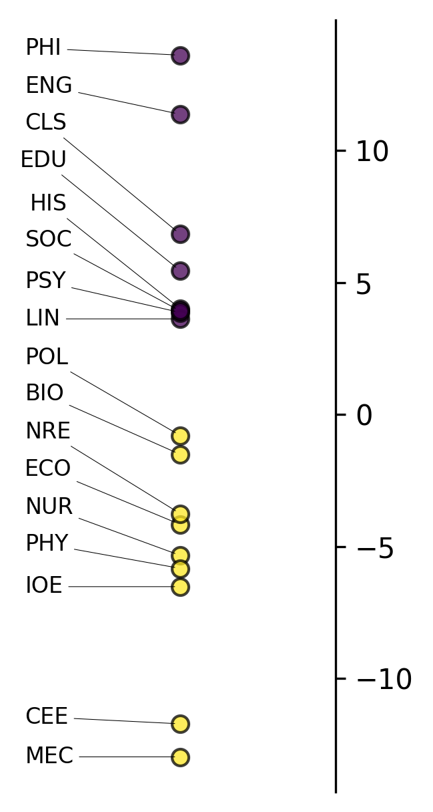
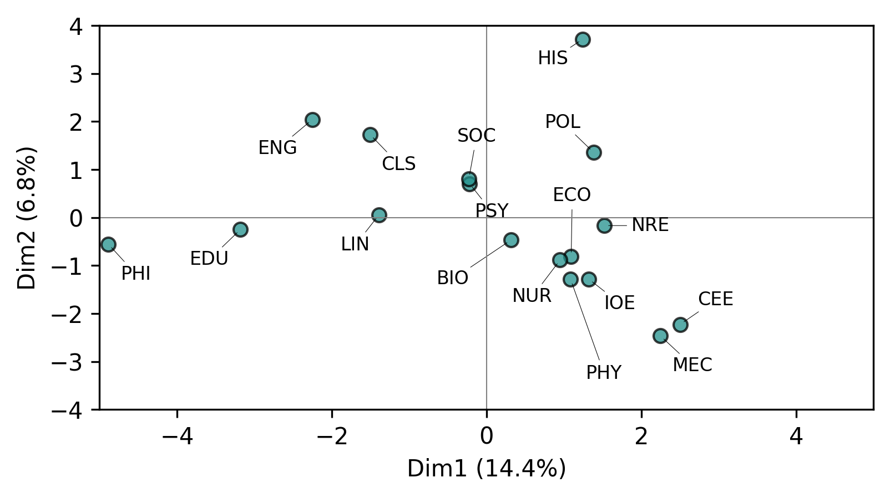
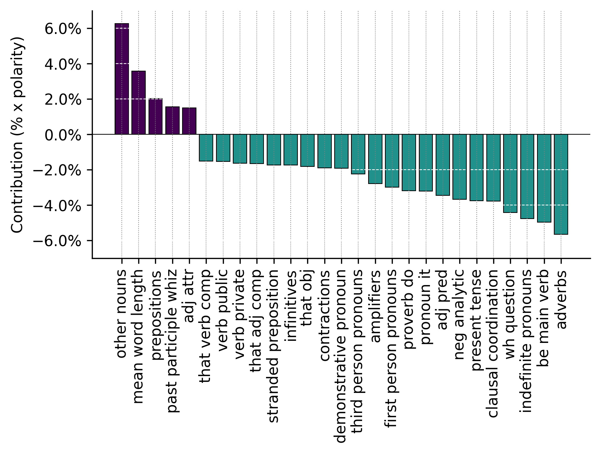

import spacy
import pybiber as pb
import polars as pl
from pybiber.data import micusp_miniBiber analyzer
The BiberAnalyzer class provides a comprehensive toolkit for conducting Multi-Dimensional Analysis (MDA) and Principal Component Analysis (PCA) on linguistic feature data. This implementation follows Biber’s methodology (Biber 1985) for exploring the systematic co-occurrence patterns of linguistic features across text types and registers.
Overview of Multi-Dimensional Analysis
Multi-Dimensional Analysis is a specific implementation of exploratory factor analysis that has been extensively used in corpus linguistics and register analysis. A representative sample of MDA studies can be seen in the table of contents of a tribute volume.
The MDA procedure consists of four main steps:
- Identification of relevant variables - Selection of linguistic features for analysis
- Extraction of factors from variables - Statistical identification of underlying dimensions
- Functional interpretation of factors as dimensions - Linguistic interpretation of statistical patterns
- Placement of categories on the dimensions - Positioning of text types along the extracted dimensions
A detailed description of the MDA procedure can be found here.
Key Features of BiberAnalyzer
The BiberAnalyzer class offers several analytical and visualization capabilities:
- Exploratory Data Analysis: Scree plots for factor selection
- Multi-Dimensional Analysis: Factor extraction with Promax rotation
- Principal Component Analysis: Alternative dimensionality reduction approach
- Visualization Tools: Comprehensive plotting functions for results interpretation
- Biber Replication: Projection onto Biber’s original dimensions
- Statistical Summaries: Detailed output of loadings, scores, and group means
Setting Up the Analysis
Loading Libraries and Data
First we will import our libraries and load the sample dataset:
The sample data (micusp_mini) is a subset of the Michigan Corpus of Upper-Level Student Papers, containing academic texts from various disciplines. This dataset is ideal for demonstrating cross-disciplinary variation in linguistic features.
Text Processing Pipeline
Next, we’ll process the raw texts through the spaCy NLP pipeline to extract linguistic features:
nlp = spacy.load("en_core_web_sm", disable=["ner"])
processor = pb.CorpusProcessor()
df_spacy = processor.process_corpus(micusp_mini, nlp_model=nlp)Performance: Corpus processing completed in 49.67s
Note
We explicitly disable Named Entity Recognition (ner) here for consistency with the PybiberPipeline defaults, which disables NER by default for improved processing speed since NER is not required for Biber feature extraction.
Feature Extraction
Now we extract the 67 Biber linguistic features from the parsed texts:
df_biber = pb.biber(df_spacy)[INFO] Using MATTR for f_43_type_token
[INFO] All features normalized per 1000 tokens except: f_43_type_token and f_44_mean_word_lengthThe biber() function returns normalized frequencies (per 1,000 tokens) for all features except type-token ratio and mean word length, which use different scales appropriate to their nature.
Data Preparation for Analysis
Understanding the Dataset Structure
Let’s examine the structure of our feature matrix:
df_biber.head()
shape: (5, 68)
| doc_id | f_01_past_tense | f_02_perfect_aspect | f_03_present_tense | f_04_place_adverbials | … | f_63_split_auxiliary | f_64_phrasal_coordination | f_65_clausal_coordination | f_66_neg_synthetic | f_67_neg_analytic |
|---|---|---|---|---|---|---|---|---|---|---|
| str | f64 | f64 | f64 | f64 | … | f64 | f64 | f64 | f64 | f64 |
| "BIO_G0_02_1" | 11.574886 | 9.821115 | 61.381971 | 2.104525 | … | 4.910558 | 6.664328 | 4.209049 | 1.403016 | 2.806033 |
| "BIO_G0_03_1" | 20.300088 | 3.53045 | 59.13504 | 1.765225 | … | 0.882613 | 7.943513 | 2.647838 | 0.882613 | 7.0609 |
| "BIO_G0_06_1" | 9.480034 | 2.585464 | 52.5711 | 0.861821 | … | 6.320023 | 10.054582 | 5.458202 | 0.574548 | 8.905487 |
| "BIO_G0_12_1" | 36.900369 | 2.767528 | 23.98524 | 1.845018 | … | 2.767528 | 0.922509 | 1.845018 | 1.845018 | 5.535055 |
| "BIO_G0_21_1" | 40.050858 | 2.542912 | 26.700572 | 2.542912 | … | 3.17864 | 7.628735 | 6.993007 | 2.542912 | 2.542912 |
Creating Categorical Variables
For MDA, we need a categorical grouping variable to compare different text types or registers. In our MICUSP data, discipline information is encoded in the doc_id field.
Note
The MICUSP data are down-sampled from the Michigan Corpus of Upper-Level Student Papers. Each document ID contains a three-letter discipline code (e.g., BIO for Biology, ENG for English, etc.).
We can extract the discipline codes and create a categorical variable:
df_biber = (
df_biber
.with_columns(
pl.col("doc_id").str.extract(r"^([A-Z])+", 0)
.alias("discipline")
)
)
df_biber.head()
shape: (5, 69)
| doc_id | f_01_past_tense | f_02_perfect_aspect | f_03_present_tense | f_04_place_adverbials | … | f_64_phrasal_coordination | f_65_clausal_coordination | f_66_neg_synthetic | f_67_neg_analytic | discipline |
|---|---|---|---|---|---|---|---|---|---|---|
| str | f64 | f64 | f64 | f64 | … | f64 | f64 | f64 | f64 | str |
| "BIO_G0_02_1" | 11.574886 | 9.821115 | 61.381971 | 2.104525 | … | 6.664328 | 4.209049 | 1.403016 | 2.806033 | "BIO" |
| "BIO_G0_03_1" | 20.300088 | 3.53045 | 59.13504 | 1.765225 | … | 7.943513 | 2.647838 | 0.882613 | 7.0609 | "BIO" |
| "BIO_G0_06_1" | 9.480034 | 2.585464 | 52.5711 | 0.861821 | … | 10.054582 | 5.458202 | 0.574548 | 8.905487 | "BIO" |
| "BIO_G0_12_1" | 36.900369 | 2.767528 | 23.98524 | 1.845018 | … | 0.922509 | 1.845018 | 1.845018 | 5.535055 | "BIO" |
| "BIO_G0_21_1" | 40.050858 | 2.542912 | 26.700572 | 2.542912 | … | 7.628735 | 6.993007 | 2.542912 | 2.542912 | "BIO" |
Let’s also examine the distribution of texts across disciplines:
discipline_counts = df_biber.group_by("discipline").len().sort("len", descending=True)
print("Distribution of texts by discipline:")
print(discipline_counts)Distribution of texts by discipline:
shape: (17, 2)
┌────────────┬─────┐
│ discipline ┆ len │
│ --- ┆ --- │
│ str ┆ u32 │
╞════════════╪═════╡
│ NUR ┆ 10 │
│ EDU ┆ 10 │
│ ENG ┆ 10 │
│ CLS ┆ 10 │
│ NRE ┆ 10 │
│ MEC ┆ 10 │
│ CEE ┆ 10 │
│ SOC ┆ 10 │
│ PSY ┆ 10 │
│ BIO ┆ 10 │
│ PHY ┆ 10 │
│ PHI ┆ 10 │
│ LIN ┆ 10 │
│ IOE ┆ 10 │
│ HIS ┆ 10 │
│ POL ┆ 10 │
│ ECO ┆ 10 │
└────────────┴─────┘Initializing the BiberAnalyzer
Creating the Analyzer Object
Now we can initialize the BiberAnalyzer with our feature matrix. The id_column=True parameter indicates that our DataFrame contains both document IDs and category labels:
analyzer = pb.BiberAnalyzer(df_biber, id_column=True)The BiberAnalyzer automatically: - Validates the input data structure - Separates numeric features from categorical variables - Computes eigenvalues for factor analysis - Performs initial data quality checks
Data Requirements and Validation
The BiberAnalyzer expects specific data formats: - Numeric columns: Normalized linguistic features (Float64) - String columns: Document identifiers and/or category labels - Valid grouping: Category variable should group multiple documents (not unique per document)
Exploratory Data Analysis
Determining Optimal Number of Factors
Before extracting factors, we need to determine how many factors to retain. The scree plot visualization helps identify the “elbow point” where eigenvalues level off:
analyzer.mdaviz_screeplot();
The scree plot shows two series: - Blue line: Eigenvalues from all features
- Orange line: Eigenvalues after removing highly correlated features (MDA approach)
The MDA convention is to extract factors with eigenvalues > 1.0, and to look for the point where the curve begins to level off.
Understanding Feature Correlations
The MDA procedure retains only features that are sufficiently correlated (r > 0.2) with other features, removing those that fall below this threshold. This approach leverages the natural multicollinearity among linguistic features to aggregate them into meaningful dimensions. You can examine the eigenvalue data directly:
print("Eigenvalues comparison:")
print(analyzer.eigenvalues.head(10))Eigenvalues comparison:
shape: (10, 2)
┌──────────┬──────────┐
│ ev_all ┆ ev_mda │
│ --- ┆ --- │
│ f64 ┆ f64 │
╞══════════╪══════════╡
│ 9.662192 ┆ 9.655607 │
│ 4.54516 ┆ 4.531601 │
│ 3.00359 ┆ 2.97753 │
│ 2.565752 ┆ 2.535722 │
│ 2.448391 ┆ 2.429068 │
│ 2.337111 ┆ 2.336713 │
│ 2.197334 ┆ 2.186297 │
│ 2.106533 ┆ 2.080074 │
│ 1.935782 ┆ 1.915118 │
│ 1.809263 ┆ 1.789251 │
└──────────┴──────────┘Conducting Multi-Dimensional Analysis
Factor Extraction
Based on the scree plot, let’s extract 3 factors (a common choice that often captures major dimensions of variation):
analyzer.mda(n_factors=3)INFO:pybiber.biber_analyzer:Dropping 2 variable(s) with max |r| <= 0.20: ['f_15_gerunds', 'f_34_sentence_relatives']The mda() method performs several key operations: - Retains features that are sufficiently correlated with others (correlation threshold: 0.2) - Extracts the specified number of factors using maximum likelihood estimation - Applies Promax rotation for better interpretability - Computes factor scores for each document - Calculates group means for each category
Examining Factor Loadings and Summary Statistics
The MDA results provide comprehensive information about the extracted factors:
analyzer.mda_summary
shape: (3, 6)
| Factor | F | df | PR(>F) | Signif | R2 |
|---|---|---|---|---|---|
| str | f64 | list[u32] | f64 | str | f64 |
| "factor_1" | 3.425988 | [16, 153] | 0.000034 | "*** p < 0.001" | 0.263771 |
| "factor_2" | 11.55233 | [16, 153] | 3.3103e-19 | "*** p < 0.001" | 0.547119 |
| "factor_3" | 3.970458 | [16, 153] | 0.000003 | "*** p < 0.001" | 0.293392 |
The summary table shows: - Feature loadings on each factor (values > 0.35 are typically considered significant) - Communalities (proportion of variance explained for each feature) - Uniqueness (proportion of variance not explained by the factors)
Interpreting the Factors
To interpret the factors, look for features with high loadings (> 0.35 or < -0.35). Features loading positively contribute to the positive pole of a dimension, while negative loadings contribute to the negative pole.
Visualizing Factor Results
The group means plot shows how different text categories (disciplines) vary along each dimension:
analyzer.mdaviz_groupmeans(factor=2, width=2, height=5);
This visualization displays: - X-axis: Different discipline categories - Y-axis: Mean factor scores for each discipline - Error bars: 95% confidence intervals around the means
Categories with higher positive scores have more features associated with the positive pole of this dimension, while negative scores indicate association with the negative pole.
Examining Individual Document Scores
You can also examine the factor scores for individual documents:
analyzer.mda_dim_scores
shape: (170, 5)
| doc_id | doc_cat | factor_1 | factor_2 | factor_3 |
|---|---|---|---|---|
| str | str | f64 | f64 | f64 |
| "BIO_G0_02_1" | "BIO" | -1.047555 | 2.579108 | 2.741629 |
| "BIO_G0_03_1" | "BIO" | 1.89817 | 5.793548 | 2.645765 |
| "BIO_G0_06_1" | "BIO" | 2.990878 | 2.540135 | 3.211185 |
| "BIO_G0_12_1" | "BIO" | -3.970903 | -19.69307 | -3.853258 |
| "BIO_G0_21_1" | "BIO" | -1.683797 | -14.797897 | -6.842276 |
| "BIO_G0_25_1" | "BIO" | 1.904973 | 4.959696 | -2.525448 |
| "BIO_G0_29_1" | "BIO" | -3.269407 | 5.220856 | 6.099175 |
| "BIO_G2_02_1" | "BIO" | -2.075444 | 10.794254 | 6.572835 |
| "BIO_G2_03_1" | "BIO" | -11.160595 | -10.013755 | 2.574394 |
| "BIO_G3_02_1" | "BIO" | -6.392135 | -2.541001 | 1.353258 |
| … | … | … | … | … |
| "SOC_G0_01_1" | "SOC" | -5.21524 | 3.960617 | 0.390415 |
| "SOC_G0_02_1" | "SOC" | 0.533442 | 12.483244 | 3.574479 |
| "SOC_G0_07_1" | "SOC" | -10.519145 | 3.482978 | -0.420552 |
| "SOC_G0_13_1" | "SOC" | 29.571642 | 16.727145 | -0.466964 |
| "SOC_G1_01_1" | "SOC" | -3.961574 | 2.09907 | 5.063635 |
| "SOC_G1_08_1" | "SOC" | -6.098901 | -7.156877 | -0.963255 |
| "SOC_G1_09_1" | "SOC" | 5.832215 | -4.200802 | -1.617159 |
| "SOC_G2_03_1" | "SOC" | -1.145246 | 5.567016 | 0.136861 |
| "SOC_G3_07_1" | "SOC" | -8.482581 | -1.640527 | 1.118681 |
| "SOC_G3_08_1" | "SOC" | -2.413674 | 7.861919 | 0.461343 |
These scores represent where each individual document falls along each extracted dimension. Higher positive scores indicate stronger association with features that load positively on that factor.
Alternative Analysis: Principal Component Analysis
PCA as an Alternative Approach
While MDA is the traditional approach in register analysis, Principal Component Analysis (PCA) offers an alternative dimensionality reduction method that may reveal different patterns:
analyzer.pca()PCA Visualizations
PCA provides its own set of visualization tools. Let’s examine how groups vary along the first principal component:
analyzer.pcaviz_groupmeans(pc=1, width=6, height=3);
We can also examine the contribution of individual features to each principal component:
analyzer.pcaviz_contrib(pc=1, width=6, height=3);
This plot shows which linguistic features contribute most strongly to the first principal component, helping interpret what linguistic patterns the component captures.
Advanced Analysis Options
Customizing the Analysis
The BiberAnalyzer offers several customization options:
Adjusting Correlation Thresholds
# Use stricter correlation threshold
analyzer.mda(n_factors=3, cor_min=0.3)Changing Factor Loading Thresholds
# Use higher threshold for significant loadings
analyzer.mda(n_factors=3, threshold=0.4)Multiple Scree Plot Comparisons
# Compare different correlation thresholds
analyzer.mdaviz_screeplot(mda=False);Accessing Raw Results
All analysis results are stored as attributes of the analyzer object:
# Check available results
available_results = [attr for attr in dir(analyzer) if not attr.startswith('_') and 'mda' in attr]
print("Available MDA results:", available_results)Available MDA results: ['mda', 'mda_biber', 'mda_dim_scores', 'mda_group_means', 'mda_loadings', 'mda_summary', 'mdaviz_groupmeans', 'mdaviz_screeplot']Interpretation Guidelines
Reading Factor Loadings
When interpreting MDA results:
- High positive loadings (> 0.35): Features that increase together and contribute to the positive pole
- High negative loadings (< -0.35): Features that contribute to the negative pole
- Low loadings (-0.35 to 0.35): Features that don’t strongly define this dimension
- Communality: How much of each feature’s variance is explained by all factors
- Uniqueness: Unexplained variance (1 - communality)
Comparing Text Types
When comparing categories on dimensions: - Distance between groups indicates how different they are linguistically - Confidence intervals show statistical reliability of group differences
- Consistent patterns across multiple factors suggest robust register differences
Comparison with Biber’s Original Dimensions
Projecting onto Biber’s Factors
One powerful feature of the BiberAnalyzer is the ability to project your data onto Biber’s original dimensions, allowing for direct comparison with established research:
analyzer.mda_biber()The mda_biber() method:
- Loads Biber’s original factor loadings from his 1988 study
- Projects your feature data onto these established dimensions
- Provides direct comparison with Biber’s dimensions:
- Factor 1: Involved vs. Informational Production
- Factor 2: Narrative vs. Non-narrative Concerns
- Factor 3: Explicit vs. Situation-dependent Reference
- Factor 4: Overt Expression of Persuasion
- Factor 5: Abstract vs. Non-abstract Information
- Factor 6: On-line Informational Elaboration
Visualizing Biber Dimension Results
Now we can visualize how our academic disciplines fall along Biber’s first dimension:
analyzer.mdaviz_groupmeans(factor=1, width=2, height=5);This plot shows how different academic disciplines position along Biber’s first dimension (Involved vs. Informational Production). Academic texts typically fall toward the “Informational” pole (negative scores) due to their formal, expository nature.
Conclusion
The BiberAnalyzer provides a comprehensive toolkit for exploring systematic patterns of linguistic variation in text corpora. By combining traditional MDA with modern computational tools and visualizations, researchers can:
- Identify key dimensions of linguistic variation in their corpora
- Compare their findings with established research through Biber projection
- Explore alternative analytical approaches through PCA
- Create publication-ready visualizations of their results
This approach enables rigorous, quantitative investigation of register variation, genre differences, and other patterns of linguistic co-occurrence in large text collections.
References
Biber, Douglas. 1985. “Investigating Macroscopic Textual Variation Through Multifeature/Multidimensional Analyses.” https://doi.org/10.1515/ling.1985.23.2.337.